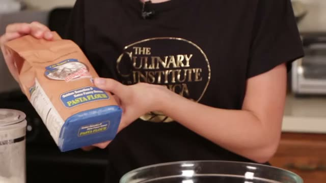
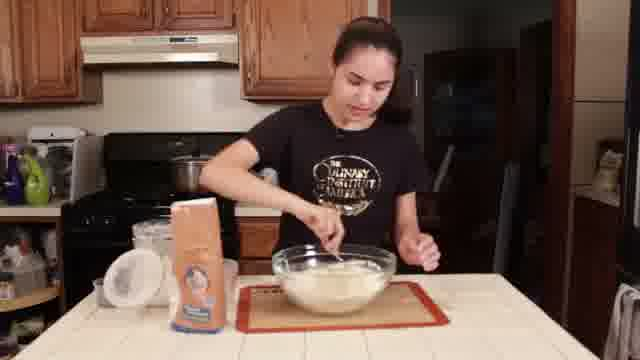
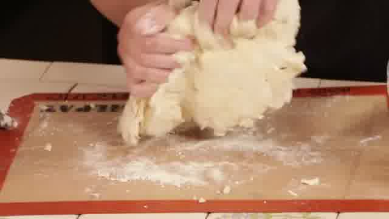
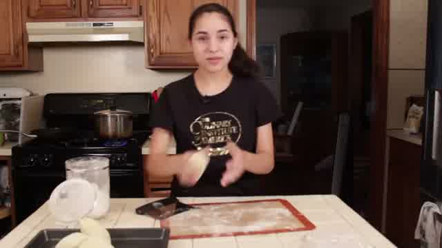
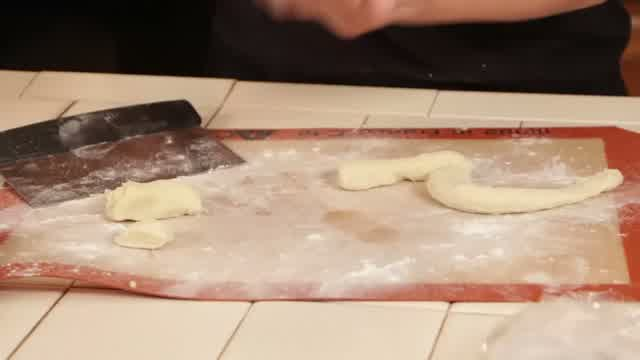
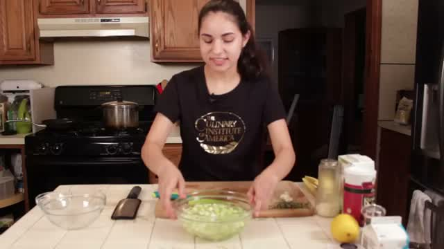
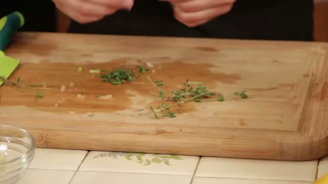
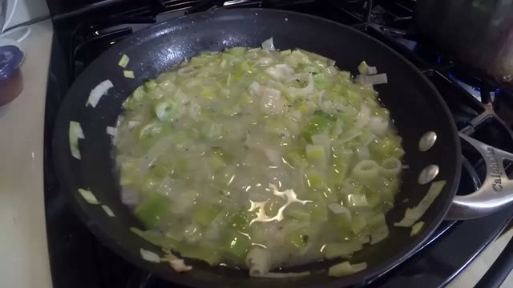

92 keyframes at every scene change · 204 timestamped transcript lines · 11-minute video
2 · A multimodal model writes the steps from frames AND words: 13 steps, each pinned to a real frame, a time range and the exact lines it came from.
3 · Served as an MCP server any assistant can call: Alexa+, or the simulated Echo Show you see next.